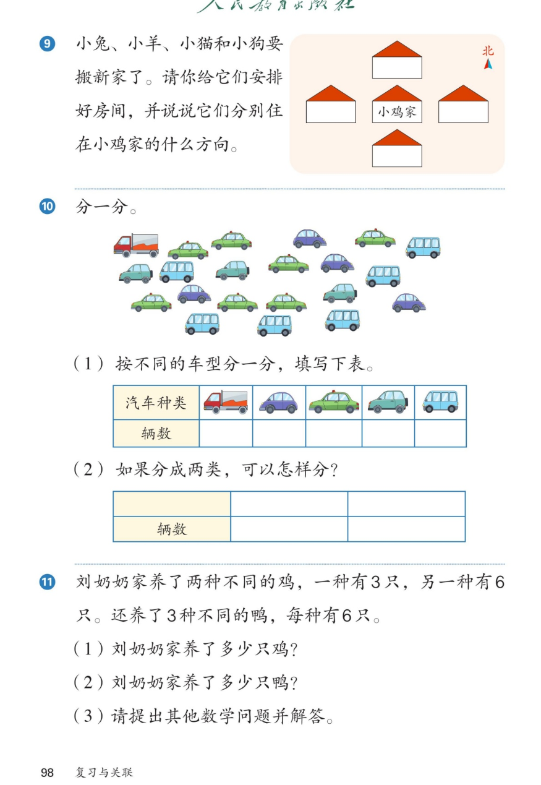

🔊 六、复习与关联 · 课本第 98 页 · 练一练 9~11
人教版《数学》二年级上册 · 有声图文带读 · 先想后看解析 · 方向安排房间 · 汽车分类统计 · 加法乘法巧分辨
题数
6
认知
2
强化
3
拓展
1
本页重点
以小鸡家为中心说方向 · 车型统计 1·4·7·3·6 · 相同加数才用乘法
🎧 分两步学：
① 解析教材图片
——纯声音读图，读到哪一块哪一块闪动提示；关键处先倒计时让你思考，再在图片下方给出解析并朗读。
② 分层提问练习
——六道分层题（认知 / 强化 / 拓展），先思考再展开解析、朗读参考答案；这一步不再回到图片。
也可以随时点任意一句话、图上任意一块单独听；点课本文字卡还会展开答案。
教材图片（点块听读，读到哪块哪块闪）

📖 人教版《数学》二年级上册 · 课本第 98 页 · 图片仅供个人学习，版权归人民教育出版社所有
🤔 想一想（点我可跳过）
课本的文字（点句子：听读 + 看答案）
第9题
怎样说清住在什么方向？
看答案 ▾
① 找
中心
：小鸡家；
② 看
北箭头
定方向：上北下南左西右东；
③ 例：小兔家在小鸡家的
北面
。
💡 同一间房，中心变了，方向说法也变。
第10题
汽车两次分类怎么分？
看答案 ▾
按车型：1、4、7、3、6，共
21
辆；
按用途：货车
1
辆、客车
20
辆；
💡 标准变了，分类结果就变了。
第11题
为什么鸡用加法、鸭用乘法？
看答案 ▾
鸡：3 只和 6 只
不同
→ 加法 3+6=
9
；
鸭：3 种、每种 6 只，
加数相同
→ 6×3=
18
；
💡 相同加数才请乘法帮忙。
提问题
还能提出什么数学问题？
看答案 ▾
鸡鸭一共多少只？9+18=
27
（只）；
鸭比鸡多几只？18-9=
9
（只）；
💡 用已有答案再提新问题，一步一个台阶。
分层提问练习（先想后看解析）
🏠
认知
把小兔安排在小鸡家上面的房子，小兔家在小鸡家的什么方向？
看解析
🤔 想一想
解析：
图上北箭头朝上，上面就是
北
；
小兔家在小鸡家的
北面
。
🚕
认知
哪种车最多？哪种最少？相差几辆？
看解析
🤔 想一想
解析：
出租车
7
辆最多，卡车
1
辆最少；
7-1=
6
（辆）。
📋
强化
第（1）题的表怎么填？一共多少辆车？
看解析
🤔 想一想
解析：
卡车 1、紫轿车 4、出租车 7；
轿车 3、面包车 6，合计
21
辆；
💡 数完再验一遍：1+4+7+3+6=21
🚚
强化
第（2）题把车分成两类，可以怎样分？
看解析
🤔 想一想
解析：
货车（运货）：
1
辆；
客车（载人）：
20
辆；
💡 1+20=21，不重不漏
🐔
强化
鸡、鸭各养了多少只？分别怎么算？
看解析
🤔 想一想
解析：
鸡：3+6=
9
（只），两种不同；
鸭：6×3=
18
（只），3 个 6 相同；
🌈
拓展
第（3）题：提出其他数学问题并解答。
看解析
🤔 想一想
解析：
鸡鸭一共：9+18=
27
（只）；
鸭比鸡多：18-9=
9
（只）；
🌈 会提问的孩子最会思考
① 解析教材图片
② 分层提问练习
⏹ 停止
纯声音 + 高亮跟随 · 想好才出解析
← 返回导航